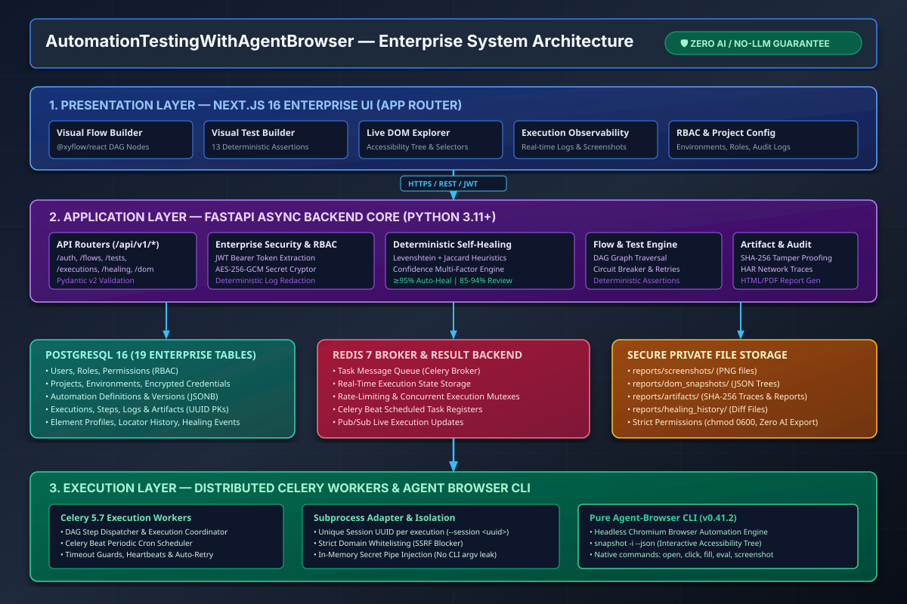
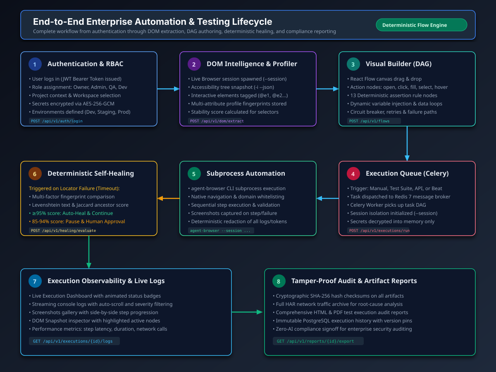
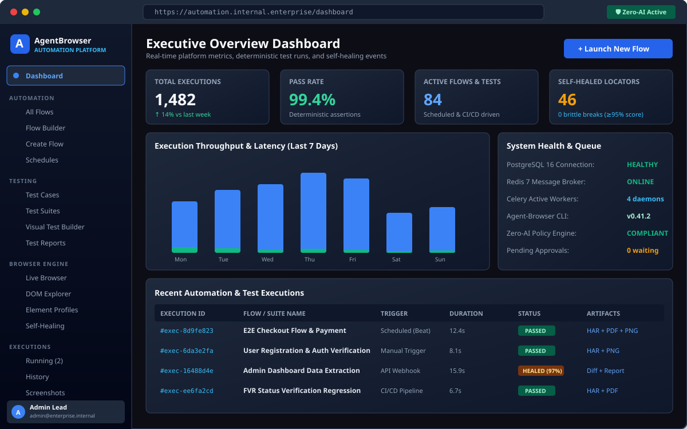
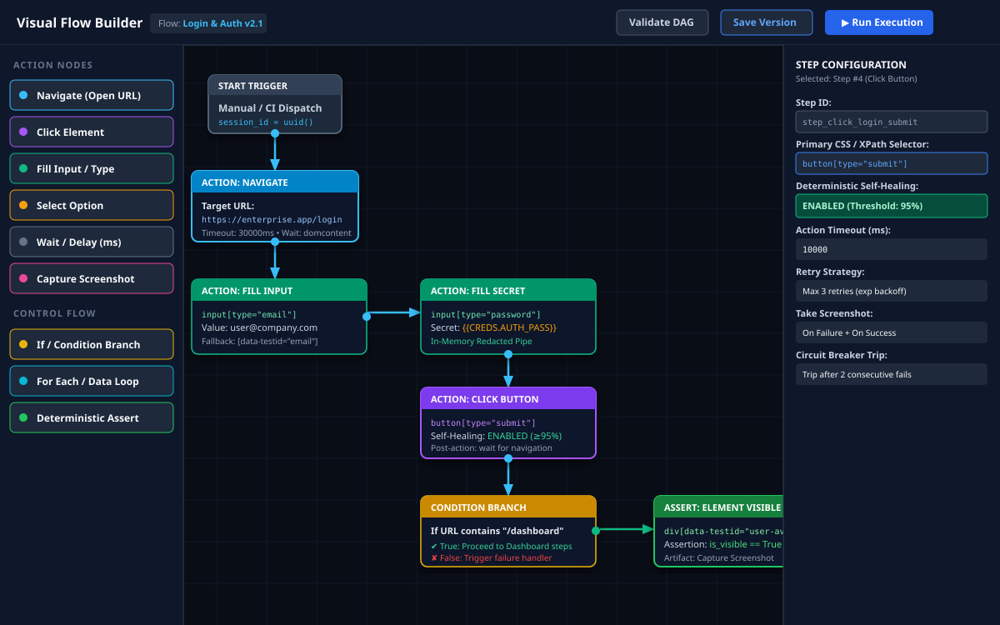
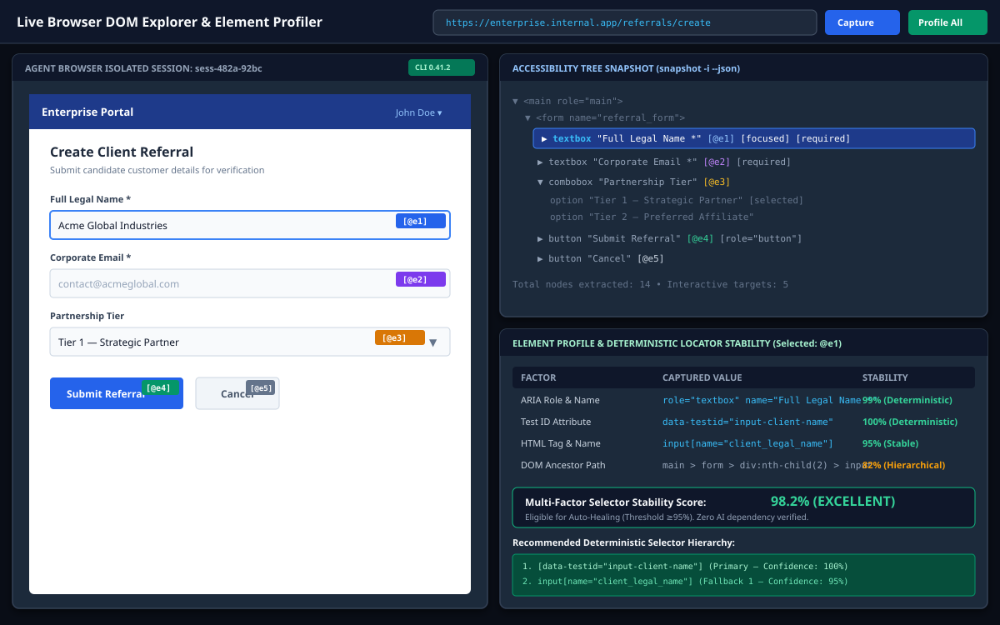
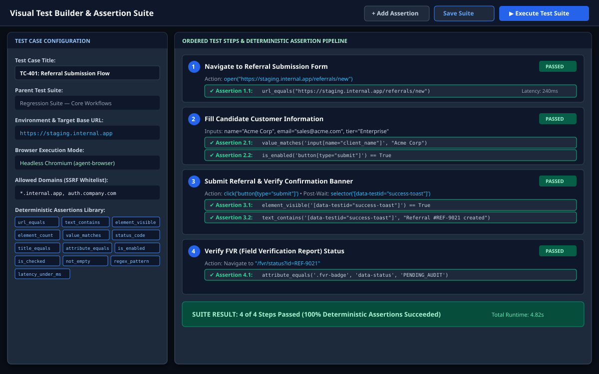
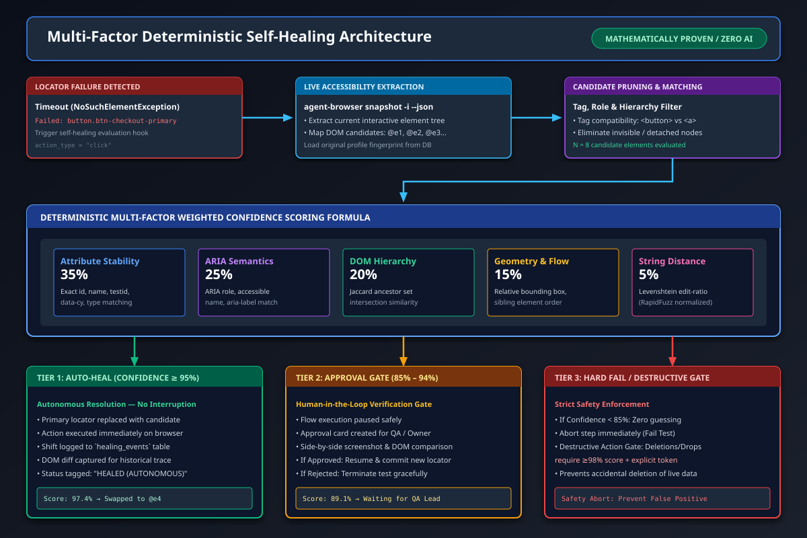
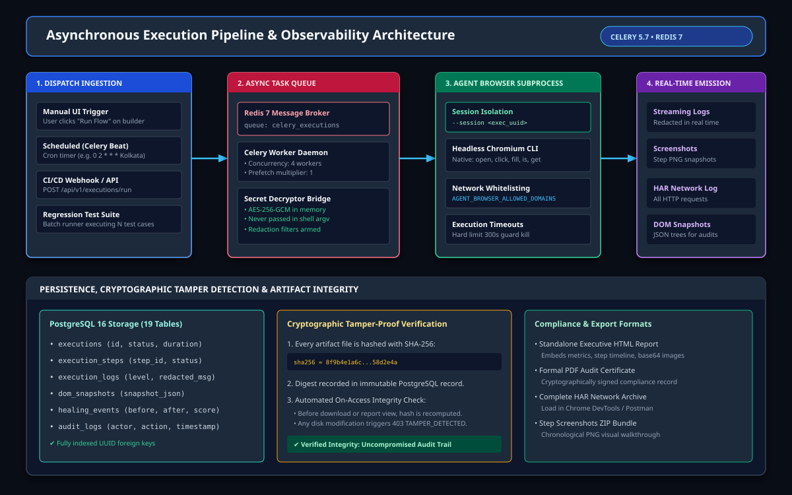
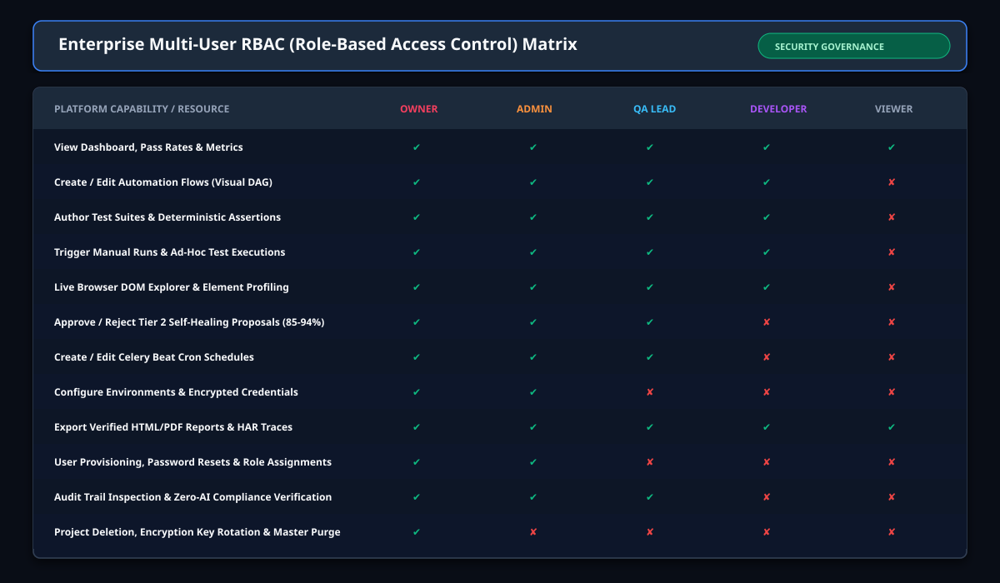
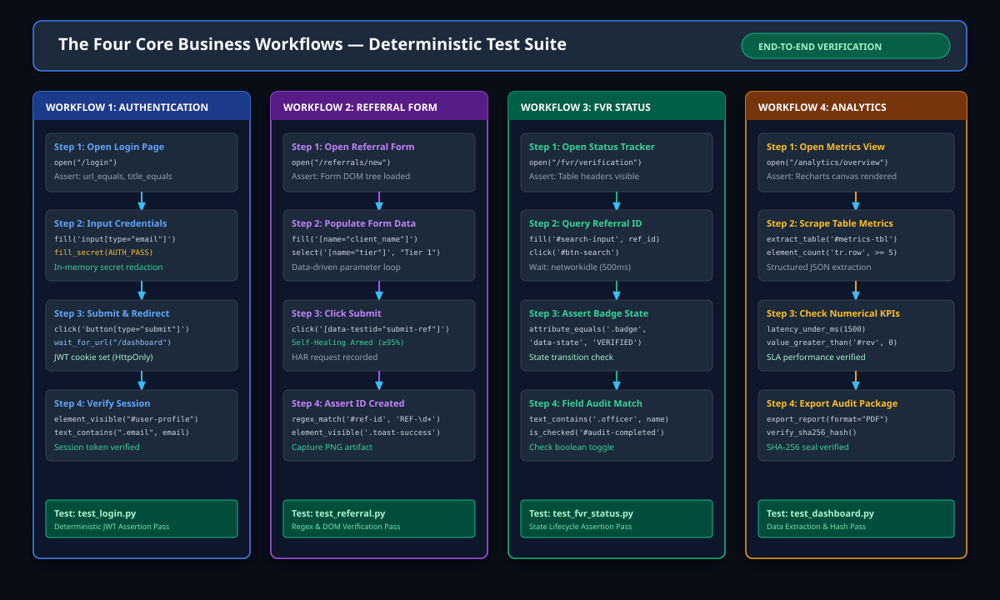

Enterprise User Manual & Operational Guide
Comprehensive guide to the AutomationTestingWithAgentBrowser platform — visual flow automation, deterministic test suites, live DOM extraction, and mathematical self-healing.
Platform Version: 1.0.0 • Engine: agent-browser CLI 0.41.2 • Database: PostgreSQL 16 • Celery: 5.7 • Redis: 7
1. Executive Overview
AutomationTestingWithAgentBrowser is a unified multi-user web platform designed for mission-critical enterprise test automation and browser orchestration. It eliminates the traditional flakiness of Selenium/WebDriver automation by utilizing pure agent-browser subprocess isolation.
Pure Agent-Browser CLI 0.41.2
Direct subprocess execution with isolated sessions, accessibility tree snapshots, and semantic element queries.
Deterministic Multi-Factor Healing
Multi-attribute stability, ARIA semantics, Jaccard hierarchy overlap, and RapidFuzz normalized Levenshtein ratios.
Visual DAG Builders
React Flow canvas with action nodes, conditional branches, data loops, and circuit breakers.
Tamper-Proof Forensic Logs
Cryptographic SHA-256 seals on all screenshots, HAR traces, and execution reports.
2. Mandatory Zero-AI Security Policy
All element recognition, assertions, and self-healing algorithms operate deterministically via mathematical criteria.
# Run the Zero-AI Policy Compliance Auditor at any time:
python scripts/verify_zero_ai_policy.py3. System Architecture
The system is architected across four distinct enterprise tiers:

4. Deployment & Quickstart
Deploy the complete containerized stack using Docker Compose:
docker compose up -d --buildFor local developer setup:
# 1. Install Backend Dependencies
python -m pip install -r backend/requirements.txt
# 2. Run Database Migrations
alembic upgrade head
# 3. Start Backend Server
uvicorn backend.main:app --host 127.0.0.1 --port 8000 --reload
# 4. Start Celery Worker & Beat Scheduler
celery -A backend.app.worker.celery_app worker -l INFO -c 4
celery -A backend.app.worker.celery_app beat -l INFO
# 5. Start Next.js Frontend
cd frontend && npm install && npm run dev5. End-to-End User Flow
The visual below details the entire lifecycle of an automation execution from user login through DOM capture, execution dispatch, self-healing, and audit generation:

6.1 Executive Dashboard
The Executive Dashboard provides an overview of test runs, deterministic assertion pass rates, and self-healing statistics:

6.2 Visual Flow Builder (DAG)
Create visual DAG workflows using the drag-and-drop canvas:

6.3 Live DOM Explorer & Element Profiler
Inspect target applications in real-time, view accessibility trees, and calculate element stability scores:

6.4 Visual Test Builder & 13 Deterministic Assertions
Build comprehensive regression suites using 13 mathematical assertion rules:

6.5 Deterministic Multi-Factor Self-Healing Engine
When UI elements shift, the platform applies a weighted mathematical confidence formula to resolve locators without human intervention:

- Tier 1 (Score ≥ 95%): Autonomous Auto-Heal & Resume.
- Tier 2 (Score 85% – 94%): Human-in-the-Loop Review Gate.
- Destructive Action Gate: Actions deleting records require ≥ 98% score.
- Tier 3 (Score < 85%): Hard Step Failure to prevent false positives.
6.6 Executions Observability, Logs & Screenshots
Monitor asynchronous tasks via Redis 7 and Celery 5.7:

6.7 Configuration & AES-256 Vault
Workflows securely reference encrypted credentials stored via AES-256-GCM. Secret values are injected directly into subprocess memory pipes and scrubbed from all logs.
6.8 Administration & RBAC Matrix
Access control is governed by 5 standardized enterprise roles:

7. The Four Core Business Workflows
The platform provides out-of-the-box regression workflows for the four fundamental business processes:

8. Forensic Cryptographic Auditing
Every screenshot PNG, HAR network capture, and execution PDF is sealed with a SHA-256 digest. Any disk modification triggers an immediate 403 TAMPER_DETECTED error on download.
9. Health Checks & FAQ
Verify API status using the health probe:
curl -s http://127.0.0.1:8000/health
# Response: {"status":"ok","engine":"postgresql","platform":"AutomationTestingWithAgentBrowser"}